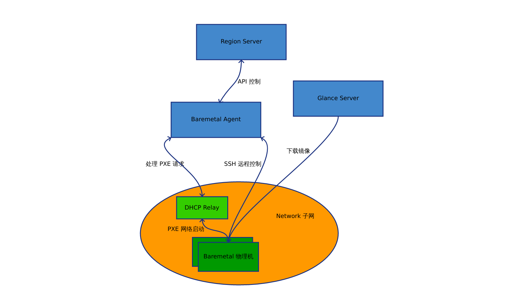

介绍
功能介绍
云平台支持 Baremetal(物理机) 管理，提供的功能如下:
-
自动化上架: 物理机上架加电启动后，自动注册到云管平台，自动分配BMC IP地址，初始化IPMI账号密码，自动上报物理机硬件配置（CPU、内存、序列号、网卡、磁盘等）
-
自动化装机: 根据配置要求自动配置 RAID，自动分区格式化磁盘，自动部署操作系统镜像，自动初始化操作系统账号密码，自动分配IP地址，可以植入配置文件
-
生命周期管理: 支持物理机自动化开机，关机，重装系统，远程带外管理，卸载操作系统等操作
-
与虚拟机共享镜像: 使用虚拟机镜像部署物理机，便于虚拟机和物理机统一操作系统运行环境
-
API 支持: 以上操作均支持API操作，便于与其他系统的自动化流程集成
-
服务器型号支持: 支持Dell、HP、华为、浪潮、联想、超微等主流x86服务器厂商和机型
-
RAID 控制器支持: LSI MegaRaid, HP Smart Array, LSI MPT2SAS, LSI MPT3SAS, Mrarvell RAID等
-
转换为宿主机: 直接将物理机转换为运行虚拟机的宿主机
-
托管已有服务器： 托管已有并装好系统的物理机
服务架构
物理机管理服务架构如下:

-
Baremetal <-> DHCP Relay： 处理 PXE 网络启动
-
DHCP Relay <-> Baremetal Agent:
- 转发 PXE Boot 请求，获取网络启动相关的信息
- 通过 DHCP 和 TFTP 服务下发 PXE 配置
- 云平台定制的网络启动小系统(yunionos) kernel 和 initramfs: 运行 SSH 服务，制作 RAID，收集硬件信息等
-
Baremetal Agent <-> Region Server:
- 通过 Region Server 注册物理机记录
- 获取网络 IP 地址
-
Baremetal Agent <-> Baremetal:
- Baremetal 通知 Agent SSH 相关的登录信息
- Agent 通过 SSH 配置 Baremetal 的 IPMI
- Agent 通过 IPMI 控制 Baremetal 开关机等操作
- Agent 通过 SSH 执行做 RAID，装机，销毁等操作
-
Glance Server -> Baremetal: Baremetal 从 Glance server 下载装机镜像
-
在交换机上开启 DHCP Relay 功能(或者使用 DHCP Relay软件)，relay 指向 Baremetal Agent
- 物理机上架通电后，设置 PXE 网络启动，DHCP Relay 会将 PXE Boot 请求转发到 Baremetal Agent，Baremetal Agent 收到 PXE Boot 请求，向 Region Server 注册物理机记录
技术细节
注册物理机
注册物理机有自动注册和手动注册两种方式，如果 Baremetal Agent 开启了自动注册功能，就会自动在云平台创建 baremetal 记录；如果为手动注册方式，就需要先调用物理机创建接口把对应的 PXE 网卡对应的 MAC 地址注册到平台。
注册的流程如下:
- 物理机 PXE 启动时会发送 DHCP PXE boot 的请求，通过 DHCP Relay 请求会到 Baremetal Agent;
- Baremetal Agent 从 DHCP 请求中取出网卡 MAC 地址，拿 MAC 地址向 Region Server 过滤物理机记录;
- Region Server 告诉 Baremetal Agent 改 MAC 地址没有物理机，Baremetal Agent 就会新建记录，并从 Region Server 获取分配对应网段的 IP 地址, 通过内置 DHCP 服务回包给物理机;
- 物理机 PXE DHCP 请求获得分配的 IP 地址后，会通过 TFTP 从 Baremetal Agent 下载启动引导文件(kernel 和 initramfs)，然后使用 ramdisk 机制进入我们定制的 initramfs 小系统;
- initramfs 小系统启动后，会启动 sshd 服务，然后修改 root 用户密码，将这些登录信息通知回 Baremetal Agent;
- Baremetal Agent 收到通知后，记录 ssh 登录的信息，开始进行准备工作;
- 准备工作包括配置 IPMI，收集硬件信息等，当这些操作完成后，将所有信息上报给 Region Server 完成注册
yunionos 网络启动小系统
yunionos(https://github.com/yunionio/yunionos) 是我们使用 Buildroot 工具定制的用于 PXE 启动和管理物理机的小型 Linux 系统，作用如下:
- 运行 sshd 服务，提供 Baremetal Agent 远程执行命令
- 包含 LSI MegaRaid, HP Smart Array, LSI MPT2SAS, LSI MPT3SAS, Mrarvell RAID等驱动和工具，用于制作 RAID
- 包含 ipmitool 和相关 driver，用于配置和调用 IPMI BMC 管理物理机
- 包含 qemu-img, sgdisk, parted 等磁盘分区工具，用于创建操作系统
SSH 管理
当物理机通过 PXE 进入 yunionos 小系统后会启动 sshd 服务，并将 ssh login 信息通知给 Baremetal Agent，Baremetal Agent 会更新 ssh 相关的登录信息
RAID 配置
RAID 配置由 Baremetal Agent 根据用户的配置，生成 raid 配置命令，通过 ssh 远程控制 yunionos 在物理机上制作 RAID
安装操作系统
RAID 做完后，Baremetal Agent 会通过 ssh 远程控制 yunionos 安装操作系统和分区，流程如下:
- 调用 /lib/mos/rootcreate.sh 将系统创建到磁盘:
- 通过 wget 从 Glance Server 下载用户指定的 image 镜像
- 通过 qemu-img convert 命名将 image 写入到磁盘
- 创建好系统后，会根据用户的配置将系统盘 resize 分区
- 创建其它分区并格式化
- Baremetal Agent 进行一些网络，磁盘配置的设置：比如 bonding，ip 设置, /etc/fstab, 改变 hostname 等
开关机
注册好的的物理机会配置好 IPMI, IPMI 相关的信息会记录在数据库，Baremetal Agent 通过 ipmitool 控制开关机
重装操作系统
类似于安装操作系统，流程上会让安装了操作系统的物理机重新进入 yunionos 小系统，然后重新安装操作系统
远程访问
Baremetal Agent 通过 ipmitool sol 接口提供串口控制界面
删除操作系统
对正在运行操作系统的物理机重启进入 PXE 网络启动，进入 yunionos 小系统，调用 /lib/mos/partdestory.sh 销毁磁盘分区和相应的 raid 命令销毁 raid 配置
Feedback
Was this page helpful?
Glad to hear it! Please tell us how we can improve.
Sorry to hear that. Please tell us how we can improve.